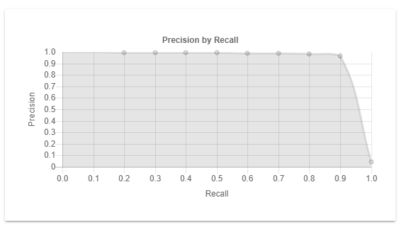

The (11-point) Precision by Recall graph shows the performance of the classifier, especially in the case of high class imbalance. The curve shows the tradeoff between precision and recall for different threshold values. A threshold or cuttoff value is selected by the classifier. This results in different precision and recall values, as displayed in the Precision by Recall graph.

Use the Precision by Recall graph to determine if the classifier is returning good results. Stop with adding new training batches when:
The curve reaches a high precision and recall (0,8 or higher).
This means the quality of the classifier is sufficient.
A set of documents is classified.
The classified documents are sorted according to the output score (responsive/not responsive) of the classifier.
For each threshold value on the output score, a precision and recall value is calculated on the top set of documents (output score larger than the threshold).
All documents in the top set are said to be classified as responsive.
This results in a set of precision-recall value pairs for each possible threshold value, which can then be set out in a Precision by Recall curve.
The standard way of displaying the Precision by Recall curve is by only showing the precision values for 11 points of recall, starting from 0 to 1 with a step size of 0,1.